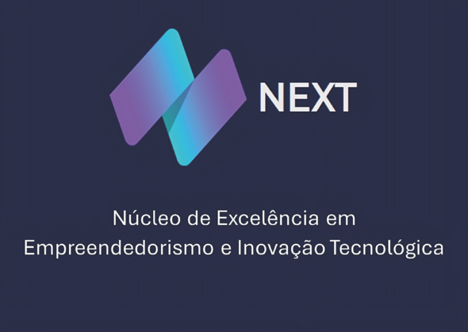

Laboratório de Apoio à Pesquisa e Inovação em Sistemas de Informação
Impulsionando o futuro da tecnologia e pesquisa no curso de Sistemas de Informação do CEFET-MG, Campus Varginha.
Nossa Essência
Onde o ensino encontra a fronteira do conhecimento.
Curso de Sistemas de Informação
CEFET-MG • Varginha
O LAPIS é um núcleo de excelência focado na investigação científica e no desenvolvimento tecnológico. Sediado no campus Varginha do Centro Federal de Educação Tecnológica de Minas Gerais, nosso objetivo é integrar estudantes e pesquisadores do curso de Sistemas de Informação em projetos que transformam a sociedade através da inovação.
- ✓ Desenvolvimento de Software Avançado
- ✓ Pesquisa Científica Aplicada
- ✓ Inovação e Extensão Tecnológica
const lapis = new Laboratory({
institution: 'CEFET-MG Varginha',
course: 'Sistemas de Informação',
mission: 'Inovação Tecnológica'
});
lapis.startResearch();
Nossos Projetos
Inovações em desenvolvimento no LAPIS.
Sistema de Visão Computacional
Análise automatizada para agricultura de precisão utilizando redes neurais convolucionais.
Saber mais →Monitoramento LoRa
Sensores remotos de baixo custo e longo alcance para monitoramento ambiental em tempo real.
Saber mais →Plataforma de Gestão Educacional
Sistema web integrado para acompanhamento do rendimento e assiduidade dos discentes.
Saber mais →Financiamento & Apoio
Projetos viabilizados por agências de fomento de excelência.
FAPEMIG
Fundação de Amparo à Pesquisa do Estado de Minas Gerais.
CNPq
Conselho Nacional de Desenvolvimento Científico e Tecnológico.
Fundação CEFET Minas
Apoio contínuo ao desenvolvimento acadêmico e tecnológico.

NEXT
Núcleo de Excelência em Empreendedorismo e Inovação Tecnológica.